Arclight
Mini Apps
Fifteen compact assessment and teaching tools. Select an app to open it.
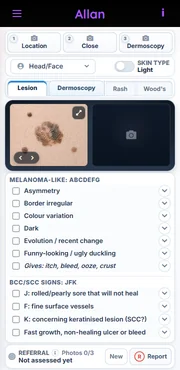
Allan
Photograph and record observed skin findings for referral prompts.
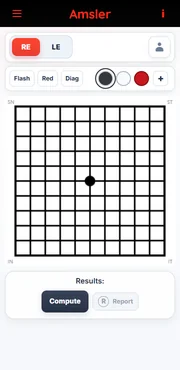
Amsler
Record fixation and grid distortion patterns.
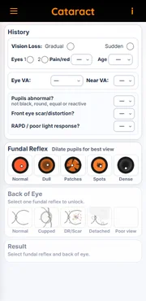
Cataract
Record lens appearance and referral prompts.
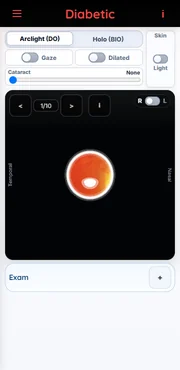
Diabetic
Record retinal signs in both eyes for triage prompts.
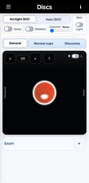
Discs
Compare optic disc appearances and referral clues.
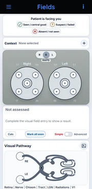
Fields
Record observed confrontation-field patterns.
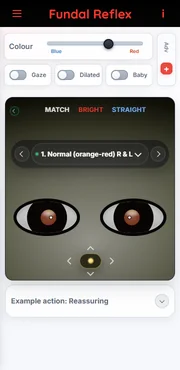
Fundal Reflex
Match reflex brightness, colour and symmetry.
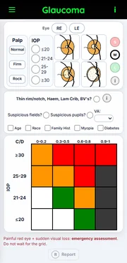
Glaucoma
Approximate risk from disc, pressure and observed signs.
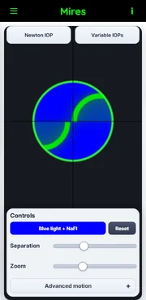
Mires
Practise Goldmann mire alignment and IOP estimation.
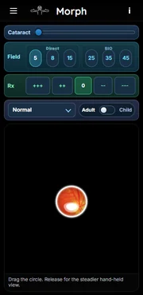
Morph
Explore fundus-view and instrument appearance.
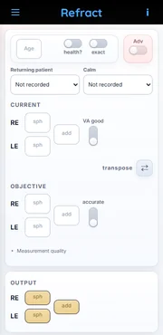
Refract
Estimate a cautious spectacle prescription from measured inputs.
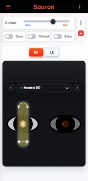
Sauron
Practise retinoscopy reflex and streak interpretation.
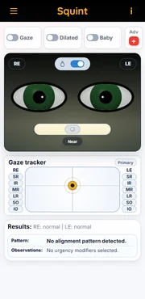
Squint
Drag observed eye positions and explore motility.
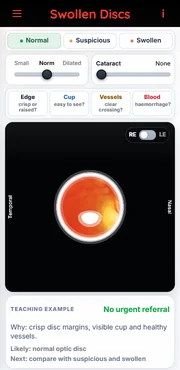
Swollen Discs
Compare disc margins, vessels and swelling clues.
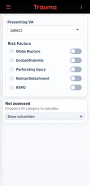
Trauma
Record presenting vision and urgent injury signs.